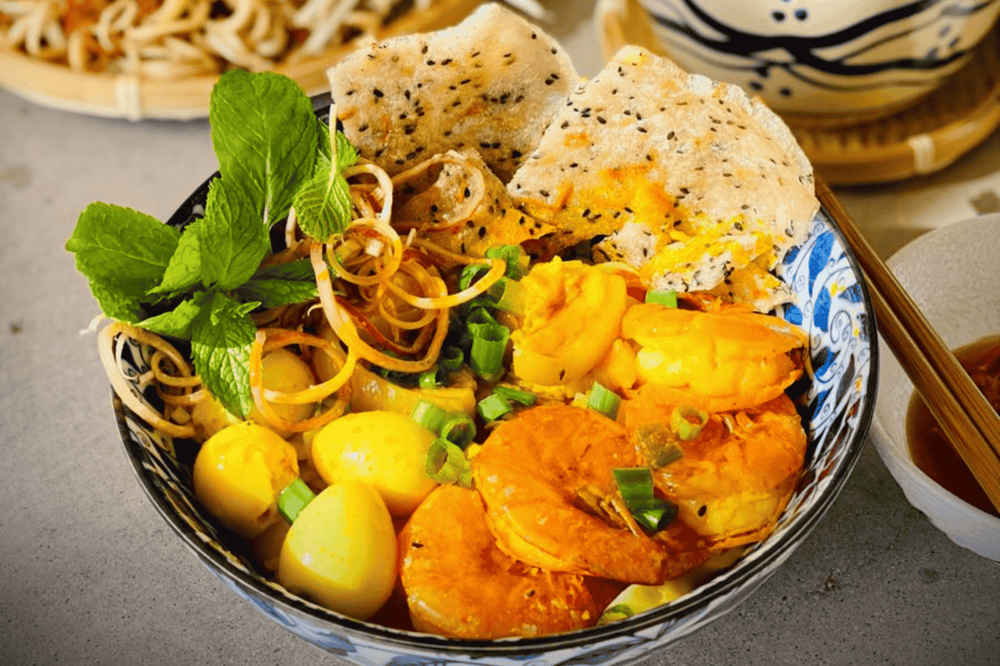
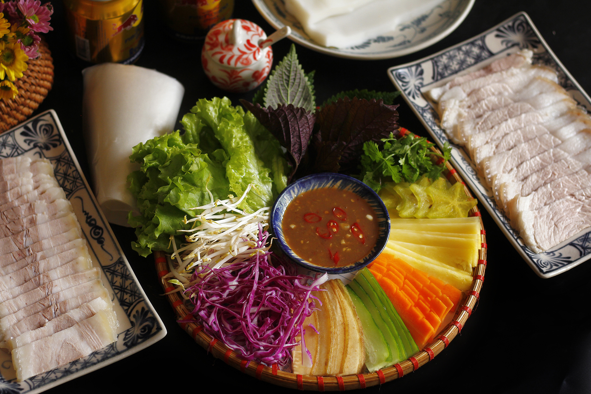
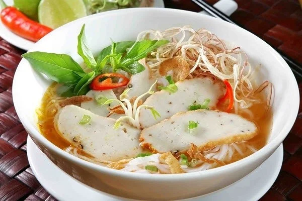
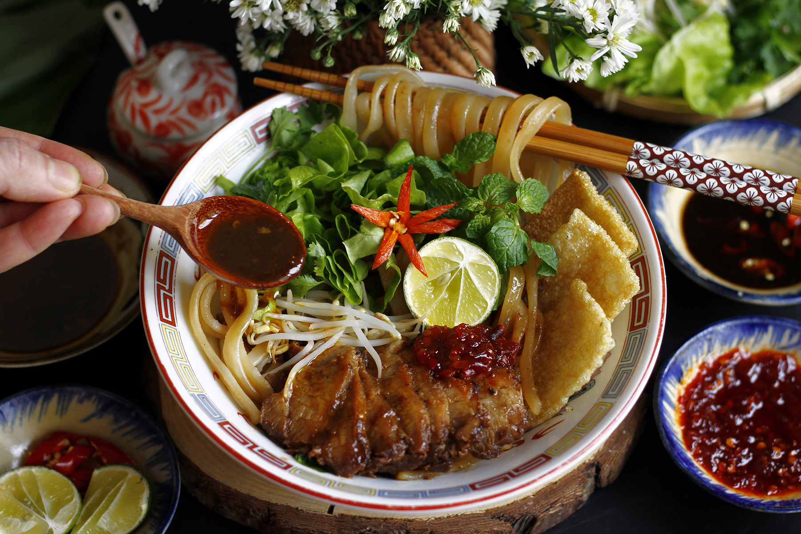

Đặc sản
Mì Quảng
Mì Quảng là món ăn đặc trưng của miền Trung với sợi mì, nước dùng, thịt, tôm, rau sống và bánh tráng.
Thành phố biển xinh đẹp và đáng sống

Mì Quảng là món ăn đặc trưng của miền Trung với sợi mì, nước dùng, thịt, tôm, rau sống và bánh tráng.

Món ăn gồm thịt heo luộc, bánh tráng, rau sống và nước chấm đặc trưng.

Bún chả cá có nước dùng đậm đà kết hợp với chả cá và rau ăn kèm.

Cao lầu kết hợp sợi mì, thịt xá xíu, rau sống và phần nước sốt đậm đà.